솔레 관련 기능 하나 만들어서 가져왔음.
에닉 덱 짜주는 기능도 써봤는데, 5개까지만 제외 가능해서 나한테는 별 의미가 없었음.
그리고 데이터가 바로바로 안들어와서 좀 기다린적도 있고
그래서 그냥 내가 만들어서 솔레때마다 덱 딸깍으로 만들어서 쓰자라는 마인드로 만들었음.
기능 요약
1. 랭킹 데이터 제공
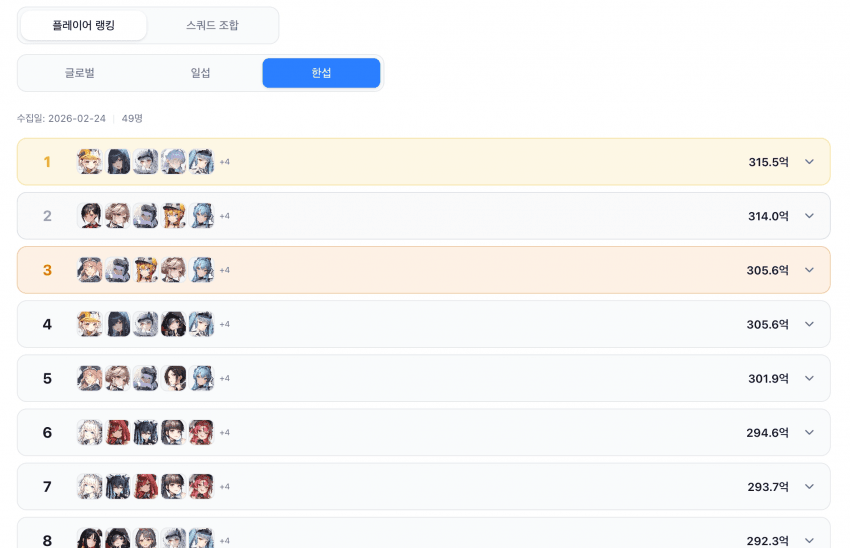
2. (서버 통합) 랭커들의 모든 스쿼드 조합을 평균딜량/사용 횟수 순으로 제공
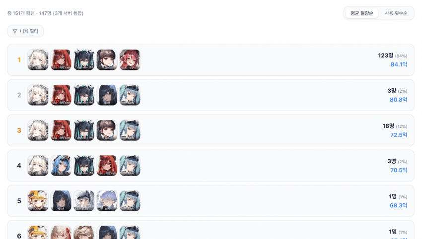
이렇게 필터 걸어서 특정 니케가 포함된 덱만 볼 수도 있음
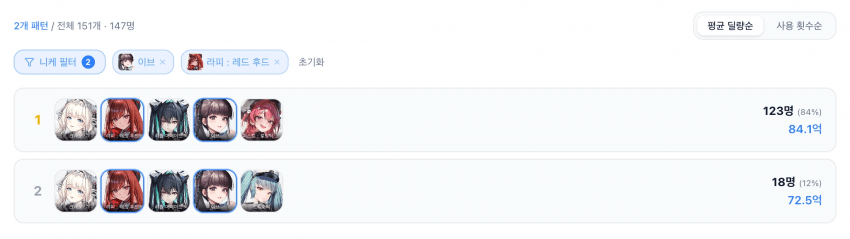
3. 덱 빌딩
- 랭커 기반 데이터로 본인 니케풀에서 가능한 모든 스쿼드 조합을 제공함(로그인 필요).
- 인게임 연동 기반이라 본인 니케만으로 자유롭게 조합 구성이 가능하고, 스펙도 한번에 볼 수 있음.
- 딜량이나 간단한 메모같은걸 적어둘 수 있음.
- 각종 덱 구성 편의성 기능들
자세한건 아래 참고
@@사용 시나리오@@
1. 일단 덱빌더에 들어가
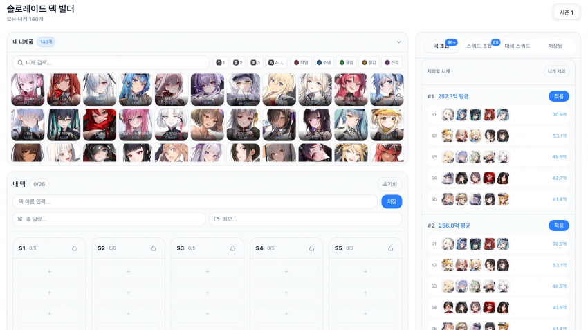
그러면 우측에 덱 조합이 보일거임.
저 덱 조합은 너의 니케풀에서 사용 가능한 모든 경우의 수를 보여줌.
그래서 니케풀이 짱짱하면 초기 로딩할 때 시간이 좀 걸릴 수 있음.
일단 아무거나 “적용” 버튼 누름.
2. 이렇게 불러와졌을거임.
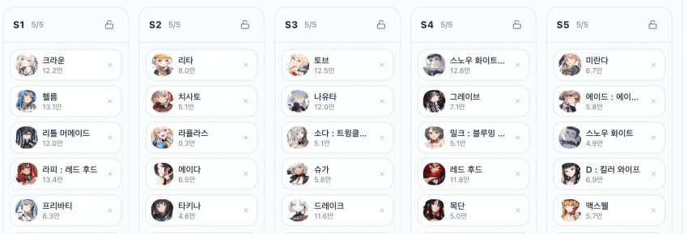
일단 지금 상태도 본인 니케풀 기반으로 구성된거니 굴러가는 덱이긴 함.
그렇지만 안키운 니케도 있을거고, 취향에 따라 빼고 싶은 니케도 있을거임.
3. 이제 각자 나름대로의 튜닝이 필요함.
저기 자물쇠 눌러서 일단 내가 쓸 스쿼드는 잠궈.
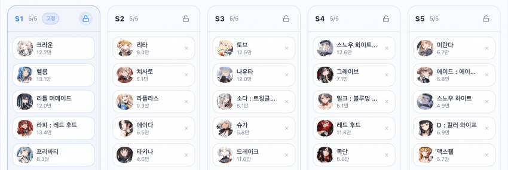
4. 그리고나서 우측에 “대체 스쿼드 탐색”을 누르면, 고정한 스쿼드 외에 나머지 스쿼드 조합을 탐색할 수 있음.
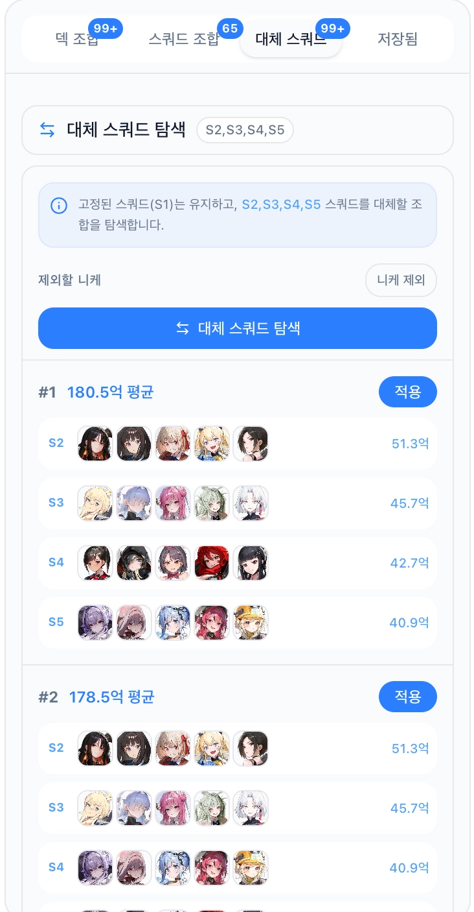
그런데 나는 라플라스랑 목단, 맥스웰, 슈가, 철스화, 츠바이를 안키웠단 말임?
그래서 이제 “니케 제외” 필터를 킬거임(본인한테 없는 니케는 아예 안나오기때문에 따로 추가 X)
필터에 라플라스랑 목단, 맥스웰, 슈가, 철스화, 츠바이 얘네를 다 추가해봄.
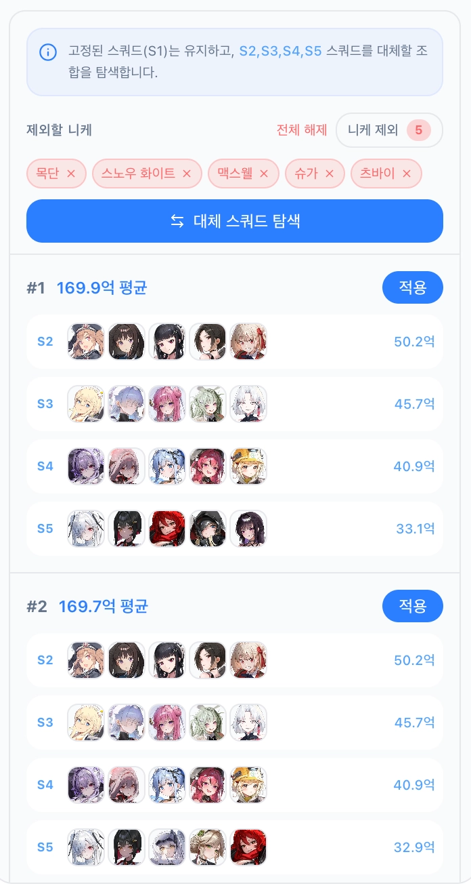
이렇게 해당 니케들 없이 조합할 수 있는 스쿼드가 구성이되어서 나옴. 아무거나 적용 눌러봄.
5. 반영이 됐음.
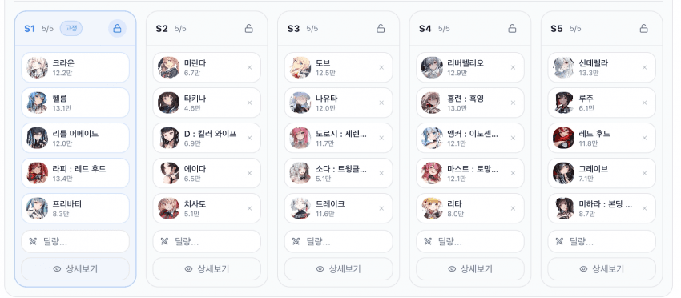
이제야 내가 좀 키운 애들 위주로 조합이 된거 같음.
“상세보기” 누르면 내 니케 정보가 나오고, 해당 스쿼드의 딜량 / 메모를 기록해둘 수 있음.
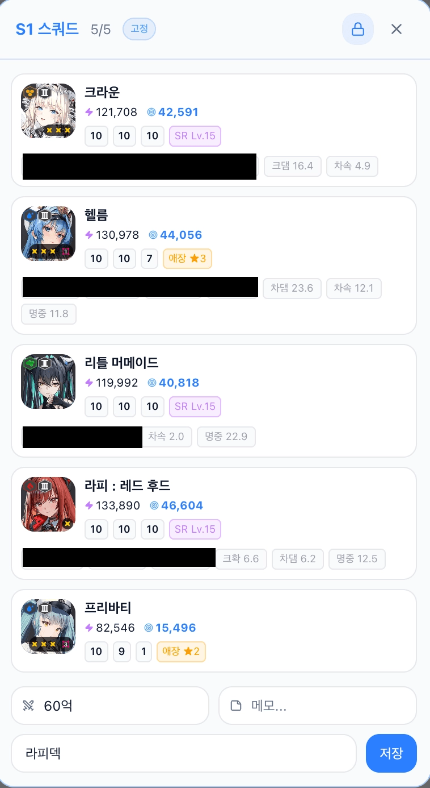
덱을 더 커스텀 하고 싶으면, 내 니케풀에서 직접 드래그&드롭으로 구성도 가능
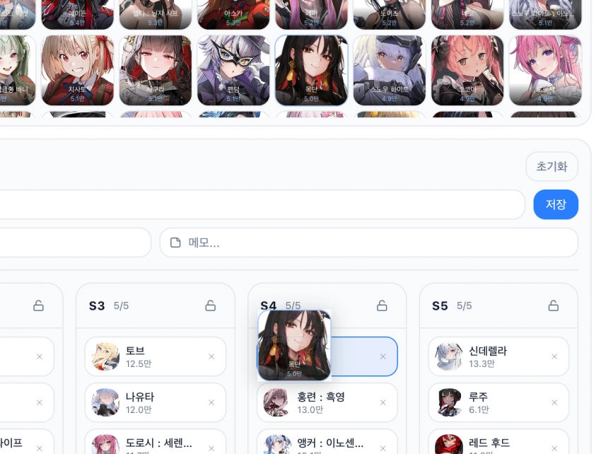
덱 전체도 저장 가능
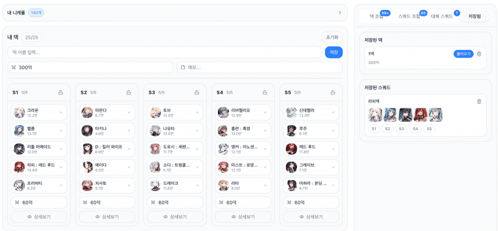
참고)
- 랭커덱이라고 해서 100% 신뢰하면 안되니, 알아서 걸러서 보기.
- 저렇게 덱이 구성된다고 해서 저게 베스트라는게 절대 아님.
덱이 굴러가는 원리나 최소 성장치가 있을 텐데 이런건 각자 찾아보던가 연구해야됨.
- 솔레가 6-4스테에 열려서, 나중에 시간나면 계정 만들어서 동남아랑 북미 솔레 데이터도 추가해봄.
- 랭킹 데이터는 6시간에 한번씩 자동으로 업데이트.
- 덱/스쿼드 조합에 나오는 평균 딜량은 "랭커 덱"에서 계산된 평균값임.
해당 조합을 쓴 랭커들이 넣은 딜 평균값이라는거. 본인 계정기준으로 넣을 수 있는 기댓값이 아니라는 소리임.
테스트 많이 안해봐서 버그가 있을수도 있음.
버그 제보나 피드백 다 받으니까 댓글로 ㄱㄱ
https://letsdoro.com/soloraid">https://letsdoro.com/soloraid